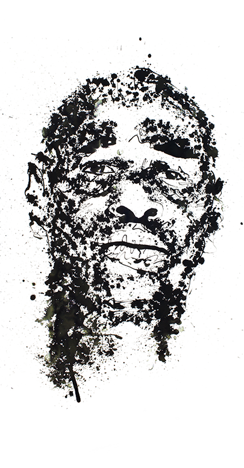
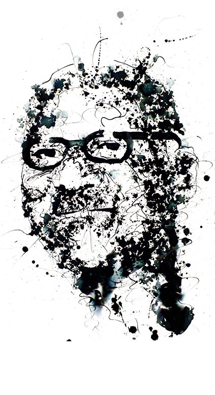
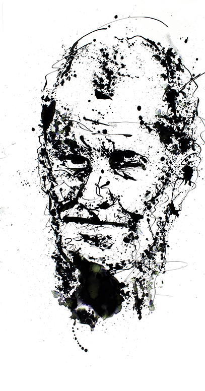
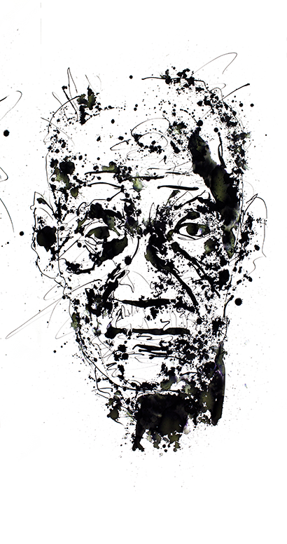

The Convicted





THEY'VE TAKEN MY NAME. THEY HAVE TAKEN MY FAMILY
They've taken my life.
I am innocent.
If you don't believe me, believe my ink.
Dear Governor Brown,
It is estimated that up to 100,000 people in prison in the United States are innocent. And one thing that could set some of them free is being ignored. Their DNA.
To get your attention on this issue, we wanted to put DNA in front of you, literally. The ink in this letter is mixed with human DNA that could set a wrongfully convicted man free, but only if it’s tested.
Please help us right the scales of justice and give everyone who needs it equal access to DNA testing. I think you would agree, the quality of our laws, policies, and practices should match the quality of our science.
We need to give everyone the same opportunities to be heard. The power is in your hands.
Sincerely,
[Your Name Here.]